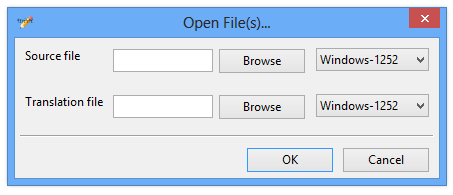

A minimalist TES V: Skyrim string table editor designed for mod translators.
StrEdit is a minimalist editor of the string table files that TES V: Skyrim plugins use to provide support for multiple languages. StrEdit can be used to create or update translations of string tables, without requiring their associated plugin to be present.
StrEdit does not contain any plugin localisation or delocalisation functionality, ie. you need to create the string tables before StrEdit can be used to edit them. TES5Edit is recommended for doing that.
To install, extract the StrEdit
folder from the downloaded archive to a location of your choice.
To uninstall, delete the StrEdit
folder you previously extracted.
StrEdit is launched by running the StrEdit.exe
found in the StrEdit folder. On launch, the Open File(s)...
dialog, shown below, is displayed.

There are three ways for StrEdit to load string tables, based on what combination of files you open. The valid combinations are:
The drop-down menus to the right of the file pickers are for selecting the fall-back encoding that should be used when reading the string tables. The string tables are assumed to contain strings encoded in UTF-8, but if a string is not valid when read as UTF-8, the fall-back encoding will be used. The encodings available for selection are:
The following example should hopefully clarify any confusion arising from the above:
Alice releases v1.0 of AliceMod, which consists of AliceMod.esp and AliceMod_English.strings.
Bob decides that he wants to translate AliceMod into German, so he opens AliceMod_English.strings in StrEdit as the source file. After translating half the strings, he gets bored and decides to finish the translation later, so closes StrEdit, saving his changes as AliceMod_German.strings.
When Bob goes back to finish off the translation, he opens AliceMod_English.strings and AliceMod_German.strings in StrEdit as the source and translation files respectively. He then finishes the translation, saving it once more as AliceMod_German.strings.
Alice then releases v1.1 of AliceMod, which adds some new strings and some fixes to typos that were present in v1.0. Because the string table in v1.1 is not the same as the string table in v1.0, Bob must update his translation before he can use it with v1.1.
Bob opens the v1.0 AliceMod_English.strings and AliceMod_German.strings and the v1.1 AliceMod_English.strings in StrEdit as the source, translation and updated source files respectively. Because the strings with the fixed typos are not exactly the same as the strings in the v1.0 source file, StrEdit will match them inexactly with the existing translations. Bob then checks that these matches are correct, making any changes if required, and adds translations for the new strings. He then saves his translation again as AliceMod_German.strings, and can now use his translation with AliceMod v1.1.
Once StrEdit has opened the file(s) selected, it will display its main window:
The main window consists of four primary elements:
| Element | Description |
|---|---|
| Filter Box | This box can be used to filter the list of strings. Entering text into this box then pressing Enteror clicking the magnifying glass icon will filter out any rows in the String List that do not have original strings that start with the same text. Clicking the cancel icon or clearing the text then pressing enter or clicking the magnifying glass icon will remove the filter. The status bar will give a count of how many strings are being filtered when a filter is applied. |
| String List | This is the list of all the strings in the loaded source string table. Clicking on a row will put its original and new strings into their respective boxes. For rows that contain an original and new string that were matched inexactly, the Fuzzycolumn will be ticked. Rows which have had their new string edited are highlighted in blue. |
| Original String Box | Displays the text in the Original Stringcolumn of the selected row. This text is non-editable. |
| New String Box | When a row is selected, this box is filled with the text in its New Stringcolumn. Any edits made are applied to that row when another row is selected. |
To translate the strings, simply select a row, enter your translation into the new string box, then select the next row and repeat until all original strings have been translated. Keyboard navigation using the tab and arrow keys is supported, as are the usual shortcuts for saving and undoing work.
Once you have finished working, select File->Save
or File->Save As...
to save your work. If you attempt to quit with unsaved work, StrEdit will ask you if you want to save it before quitting.
Thanks go to shadeMe and zilav for answering some questions I had during development.
StrEdit's interface is inspired by Poedit's interface.
StrEdit is written in C++ and makes use of the Boost, wxWidgets and libstrings libraries. Without them, it would not exist.
StrEdit is copyright © 2012 WrinklyNinja, and is licensed under the GNU General Public License v3.0, the full text of which is found in the included LICENSES
file.